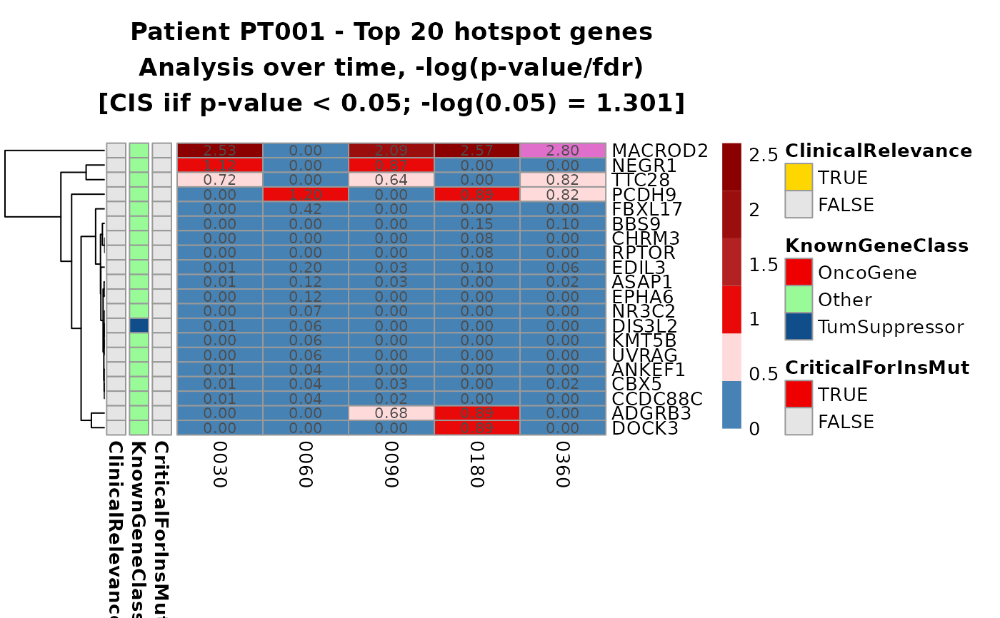
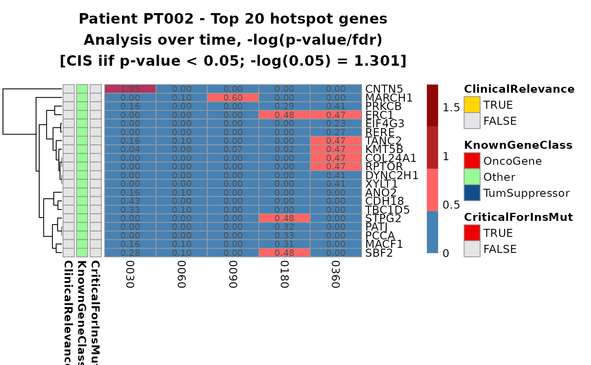

Heatmaps for the top N common insertion sites over time.
Source:R/plotting-functions.R
top_cis_overtime_heatmap.Rd![[Experimental]](figures/lifecycle-experimental.svg) This function computes the visualization of the results of the function
This function computes the visualization of the results of the function
CIS_grubbs_overtime() in the form of heatmaps for the top N selected
genes over time.
Usage
top_cis_overtime_heatmap(
x,
n_genes = 20,
timepoint_col = "TimePoint",
group_col = "group",
onco_db_file = "proto_oncogenes",
tumor_suppressors_db_file = "tumor_suppressors",
species = "human",
known_onco = known_clinical_oncogenes(),
suspicious_genes = clinical_relevant_suspicious_genes(),
significance_threshold = 0.05,
plot_values = c("minus_log_p", "p"),
p_value_correction = c("fdr", "bonferroni"),
prune_tp_treshold = 20,
gene_selection_param = c("trimmed", "n", "mean", "sd", "median", "mad", "min", "max"),
fill_0_selection = TRUE,
fill_NA_in_heatmap = FALSE,
heatmap_color_palette = "default",
title_generator = NULL,
save_as_files = FALSE,
files_format = c("pdf", "png", "tiff", "bmp", "jpg"),
folder_path = NULL,
...
)Arguments
- x
Output of the function
CIS_grubbs_overtime(), either in single data frame form or nested lists- n_genes
Number of top genes to consider
- timepoint_col
The name of the time point column in
x- group_col
The name of the group column in
x- onco_db_file
Uniprot file for proto-oncogenes (see details). If different from default, should be supplied as a path to a file.
- tumor_suppressors_db_file
Uniprot file for tumor-suppressor genes. If different from default, should be supplied as a path to a file.
- species
One between
"human","mouse"and"all"- known_onco
Data frame with known oncogenes. See details.
- suspicious_genes
Data frame with clinical relevant suspicious genes. See details.
- significance_threshold
The significance threshold
- plot_values
Which kind of values should be plotted? Can either be
"p"for the p-value or"minus_log_p"for a scaled p-value of the Grubbs test- p_value_correction
One among
"bonferroni"and"fdr"- prune_tp_treshold
Minimum number of genes to retain a time point. See details.
- gene_selection_param
The descriptive statistic measure to decide which genes to plot, possible choices are
"trimmed", "n", "mean", "sd", "median","mad", "min", "max". See details.- fill_0_selection
Fill NA values with 0s before computing statistics for each gene? (TRUE/FALSE)
- fill_NA_in_heatmap
Fill NA values with 0 when plotting the heatmap? (TRUE/FALSE)
- heatmap_color_palette
Colors for values in the heatmaps, either
"default"or a function producing a color palette, obtainable viagrDevices::colorRampPalette.- title_generator
Either
NULLor a function. See details.- save_as_files
Should heatmaps be saved to files on disk? (TRUE/FALSE)
- files_format
The extension of the files produced, supported formats are
"pdf", "png", "tiff", "bmp", "jpg". Relevant only iffiles_format = TRUE- folder_path
Path to the folder where files will be saved
- ...
Other params to pass to
pheatmap::pheatmap
Details
Oncogene and tumor suppressor genes files
These files are included in the package for user convenience and are
simply UniProt files with gene annotations for human and mouse.
For more details on how this files were generated use the help
?tumor_suppressors, ?proto_oncogenes
Known oncogenes
The default values are included in this package and it can be accessed by doing:
If the user wants to change this parameter the input data frame must
preserve the column structure. The same goes for the suspicious_genes
parameter (DOIReference column is optional):
Top N gene selection
Since the genes present in different time point slices are likely different, the decision process to select the final top N genes to represent in the heatmap follows this logic:
Each time point slice is arranged either in ascending order (if we want to plot the p-value) or in descending order (if we want to plot the scaled p-value) and the top n genes are selected
A series of statistics are computed over the union set of genes on ALL time points (min, max, mean, ...)
A decision is taken by considering the ordered
gene_selection_param(order depends once again if the values are scaled or not), and the first N genes are selected for plotting.
Filling NA values prior calculations
It is possible to fill NA values (aka missing combinations of GENE/TP) with 0s prior computing the descriptive statistics on which gene selection is based. Please keep in mind that this has an impact on the final result, since for computing metrics such as the mean, NA values are usually removed, decreasing the overall number of values considered - this does not hold when NA values are substituted with 0s.
The statistics
Statistics are computed for each gene over all time points of each group.
More in detail, n: counts the number of instances (rows)
in which the genes appears, aka it counts the time points in which the gene
is present. NOTE: if
fill_0_selection option is set to TRUE this value will be equal for
all genes! All other statistics as per the argument gene_selection_param
map to the corresponding R functions with the exception of trimmed which
is a simple call to the mean function with the argument trimmed = 0.1.
Aesthetics
It is possible to customise the appearence of the plot through different parameters.
fill_NA_in_heatmaptells the function whether missing combinations of GENE/TP should be plotted as NA or filled with a value (1 if p-value, 0 if scaled p-value)A title generator function can be provided to dynamically create a title for the plots: the function can accept two positional arguments for the group identifier and the number of selected genes respectively. If one or none of the arguments are of interest, they can be absorbed with
....heatmap_color_palettecan be used to specify a function from which colors are sampled (refers to the colors of values only)To change the colors associated with annotations instead, use the argument
annotation_colorsofpheatmap::pheatmap()- it must be set to a list with this format:
list(
KnownGeneClass = c("OncoGene" = color_spec,
"Other" = color_spec,
"TumSuppressor" = color_spec),
ClinicalRelevance = c("TRUE" = color_spec,
"FALSE" = color_spec),
CriticalForInsMut = c("TRUE" = color_spec,
"FALSE" = color_spec)
)See also
Other Plotting functions:
CIS_volcano_plot(),
HSC_population_plot(),
circos_genomic_density(),
fisher_scatterplot(),
integration_alluvial_plot(),
sharing_heatmap(),
sharing_venn(),
top_abund_tableGrob()
Examples
data("integration_matrices", package = "ISAnalytics")
data("association_file", package = "ISAnalytics")
aggreg <- aggregate_values_by_key(
x = integration_matrices,
association_file = association_file,
value_cols = c("seqCount", "fragmentEstimate")
)
cis_overtime <- CIS_grubbs_overtime(aggreg)
#> Warning: Warning: missing genes in refgenes table
#> ℹ A total of 5 genes were found in the input data but not in the refgene table. This may be caused by a mismatch in the annotation phase of the matrix. Here is a summary:
#> # A tibble: 5 × 3
#> chr GeneName GeneStrand
#> <chr> <chr> <chr>
#> 1 14 PLEKHG4B -
#> 2 15 CRELD2 -
#> 3 16 UBE2D2 +
#> 4 19 LINC01133 +
#> 5 6 HTR4 +
#> ℹ NOTE: missing genes will be removed from the final output! Review results carefully
#> ℹ A total of 25 IS will be removed because of missing genes ( 2.33 % of total IS in input)
hmaps <- top_cis_overtime_heatmap(cis_overtime$cis,
fill_NA_in_heatmap = TRUE
)
#> Loading annotated genes - species selected:
#> • Homo sapiens (Human)
#> Loading annotated genes - done


# To re-plot:
# grid::grid.newpage()
# grid::grid.draw(hmaps$PT001$gtable)